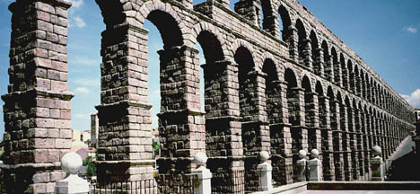
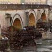
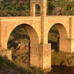

Arquitectura y escultura romana
(Haz clic en las imágenes para verlas con más detalle. En algunos casos, hacer clic en la nueva imagen permite verla con aún más detalle.)
Acueducto de Segovia |
El acueducto de Segovia
 1. |
La mayor parte del acueducto, que empieza en un manantial en la sierra y termina en el alcázar (castillo) de Segovia, es subterráneo. En total mide unos 15 kilómetros (9,3 millas). La parte elevada mide más de 900 metros de largo (algo más de 3000 pies). Aunque muy larga (alrededor de 300 metros), la parte más famosa con su bella doble arquería y ubicada en el centro de Segovia (lo que se ve aquí) es solo un pequeño tramo en el recorrido total. (El resto de la parte elevada es o bien de arquería simple—es decir, de un único nivel— o sólo un muro.) Los bloques son de granito y se ensamblaron sin mortero. En su punto más elevado, mide más de 28 metros de alto (más de 90 pies). Un espacio rectangular en esta zona llevaba en su momento letras posiblemente de bronce formando una inscripción, pero éstas se han perdido y por eso no se puede fechar con exactitud; se construyó probablemente en el primer siglo d.C. Es uno de los acueductos romanos mejor conservados del mundo y buena muestra de las inversiones nada despreciables en infraestructura urbanística e hidráulica en las Hispanias, que en el siglo primero constituían uno de los territorios romanos más importantes. Siguió en uso para abastecer de agua a la ciudad hasta bien entrado el siglo XX. (Para información sobre el estado de conservación del acueducto y propuestas para su restauración y protección, véase este artículo del arquitecto Francisco Jurado.)
Abajo, una vista frontal, una vista aérea, una foto de satélite con el recorrido por Segovia (exterior y subterráneo) señalado en rojo y una vista de cerca en la que se aprecian los agujeros para las garras (ferrei forfices o "tijeras de hierro") utilizadas para levantar los bloques, con la ayuda de poleas. |
{kind=link}
{kind=link}
{kind=link}
{kind=link}
{kind=link}
Puentes romanos en Córdoba y Alcántara
Construido para ser duradero, el puente romano de Córdoba sobre el Guadalquivir, como otros muchos en toda Europa, sigue utilizándose. Es obra de principios del siglo I d.C., cuando Corduba era una de las ciudades más importantes de la península. Mide unos 225 metros de largo (738 pies) y tiene 16 arcos. En el lado del puente que mira aguas arriba, apreciable en esta imagen, las construcciones triangulares junto a las pilas (los pilares de los arcos) sirven para desviar la corriente del agua para protegerlas cuando el río está alto. |
 |
El puente de Alcántara es famoso por su notable altura. (El nombre del pueblo cercano, Alcántara, es del árabe, al Qantara, que significa "el puente".) Mide 71 metros de altura (232 pies) y 194 metros de largo (636 pies). Se construyó en el año 104 en honor al emperador Trajano. Ha sufrido daños y reconstrucciones en varias épocas, incluida la destrucción de un arco durante la invasión napoleónica de España a principios del siglo XIX. Sigue en uso hoy en día. |
 |
{kind=link}
{kind=link}
El teatro de Mérida (Emerita Augusta)
Las primeras construcciones del teatro datan del siglo I a.C., poco después de la fundación de la ciudad por el emperador Augusto en el año 25 a.C., conocida como Emerita por las dos legiones de veteranos, emeriti, mandadas a ese lugar para defender un cruce en el Río Guadiana. Ésta, capital de la provincia de Lusitania, era otra de las ciudades más importantes de Hispania. El espectacular frontal de escena (scenae frons) con sus llamativas columnas corintias es una remodelación posterior, del siglo I d.C., quizás de la época del emperador Trajano. Refleja la gran prosperidad de la ciudad. |
{kind=link}
{kind=link}
Itálica: anfiteatro y viviendas
Itálica, ciudad nativa de los dos emperadores romanos de origen hispánico, Trajano y Adriano, fue en su momento un lugar elegante y cosmopolita. Escipión la fundó en 206 a.C. para veteranos de la Tercera Guerra Púnica. Su época de mayor auge fue bajo los emperadores que nacieron allí; Adriano en particular mandó la construcción de la nova urbs o "ciudad nueva", muchos de cuyos mosaicos aún se conservan. Su declive y abandono final se deben a una falta de agua: la deforestación de la zona alrededor provocó la erosión de los montes y un cambio en el curso del río Guadalquivir, desviándolo de la ciudad, lo que también desalentó nuevas edificaciones. Como nunca se construyó una ciudad moderna sobre estas ruinas, se hallan en excelente estado de conservación. Además de un enorme anfiteatro (el tercero más grande del Imperio), se pueden admirar los mosaicos que servían de suelo en las viviendas y edificios de la ciudad. Abajo, una vista del anfiteatro e imágenes de mosaicos. La segunda miniatura es del suelo de la llamada "Casa de los Planetas", en la que hay representaciones de los dioses para cada día; en la imagen más amplia correspondiente, hay fotos detalladas de cuatro de estas divinidades: Júpiter (jueves), Venus (viernes), Mercurio (miércoles), y Marte (martes). Haciendo clic en la tercera miniatura, se ven detalles de los suelos de varios edificios. |
|
{kind=link}
{kind=link}
{kind=link}